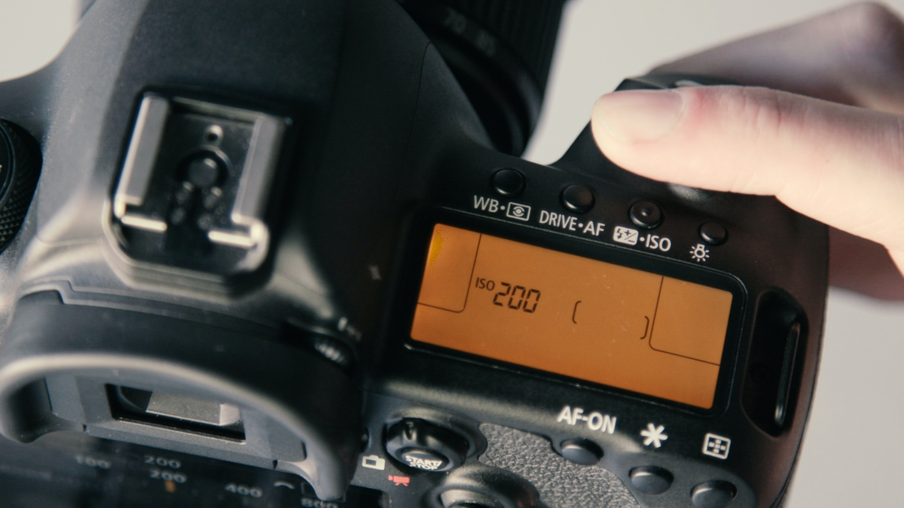

iso는 빛을 받아들이는 민감도이다. 이걸 눈과 비유하여 설명하지 않은 이유는 우리 눈에는 빛의 민감도를 조절하는 장치가 없기 때문이다.
쉽게 설명하자면 1의 빛이 들어올때 조리개를 최대 개방하고 사진을 찍어도 셔터스피드가 확보되지 않는다면 전자식으로 빛의 양을 2나 3으로 받아들이게 하는 장치이다.
보통 카메라들은 기본적으로 iso가 100인 상태인데 밝은 낮에는 아무 상관이 없다. 하지만 해가 아예 진 밤중에는 iso가 100인 상태에서 사진을 찍으려면 삼각대를 펼치고 카메라를 고정 시킨 뒤 조리개를 최대로 개방하고 셔터스피드를 아주 느리게 설정한 후에 촬영 해야 사진이 제대로 나오는 경우가 많다. 이런 경우 iso를 점점 높여주며 촬영하면 빛을 민감하게 받아드리기 때문에 빠른 셔터스피드로 촬영이 가능해진다.
대신 iso를 높이면 높일수록 노이즈가 심해지므로 촬영시 노이즈를 확인하며 적절한 iso를 유지하는 것이 중요하다.